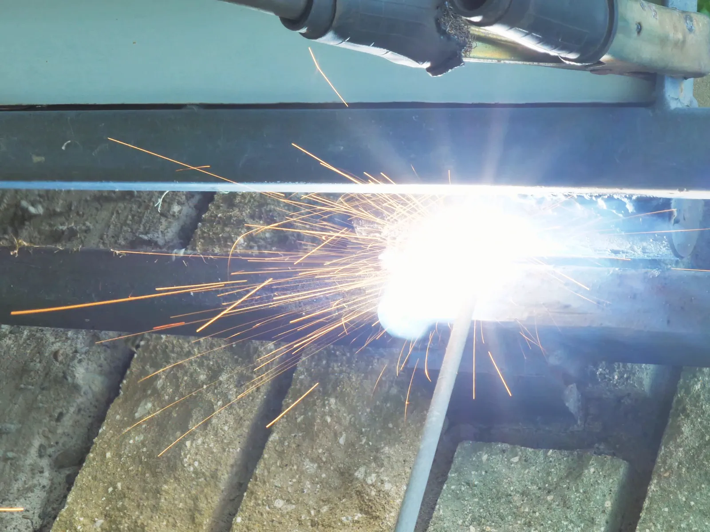
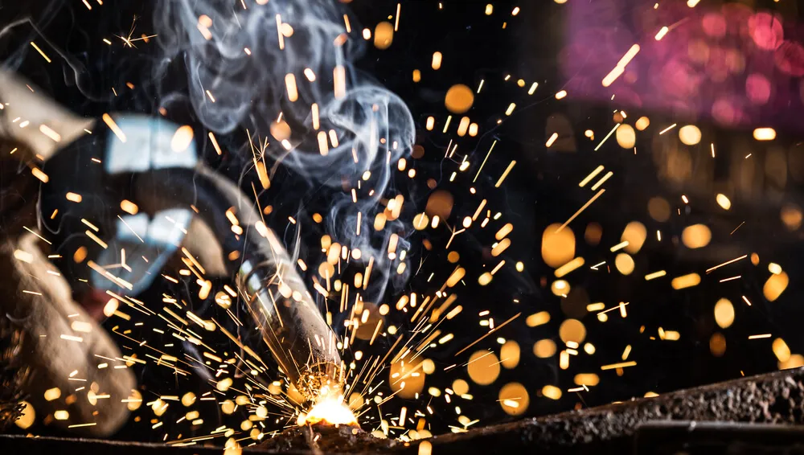

Home · Arc Welding · Shielded Arc Welding
Shielded Metal Arc Welding Services in New Orleans
At Big Easy Mobile Welders, we provide shielded metal arc welding, better known as stick welding, for homes and businesses across New Orleans. Our licensed, insured and highly trained welders bring the machine, the electrodes and the safety gear to your site.

We come to the jobWhat Does Our Shielded Arc Welding Service Include in New Orleans?
Our shielded arc welding service in New Orleans includes a free estimate, an electrode matched to your metal, a complete stick welding setup brought to your site, full protective gear, slag cleanup between passes and a final walkthrough. The work suits maintenance, repair, construction and fabrication jobs at homes and businesses.
A Free Consultation and Estimate
We talk through your project, look at the metal and give you a no-obligation quote with no hidden fees.
An Electrode Matched to the Metal
Stick electrodes come in many types. We pick one that suits the base metal, its thickness and the position of the joint.
A Complete Stick Setup
We arrive with the welding machine, electrode holder, leads and cables, connectors and a ground clamp, ready to work.
Protective Gear on Every Job
Our welders wear a helmet, gloves and protective clothing. The arc gives off intense light, heat and sparks.
Slag Cleared Pass by Pass
The flux leaves a crust of slag on each bead. We knock it off with a chipping hammer and brush the weld clean before the next pass.
A Walkthrough When We Finish
We show you the completed weld, answer your questions and stay available for follow-up support.

Which Shielded Arc Welding Processes Do We Offer in New Orleans?
In New Orleans we offer shielded metal arc welding as our main shielded process, along with gas metal arc, gas tungsten arc and plasma arc welding. Stick welding protects the weld with flux on the rod, while the other three protect it with gas, which makes each one better suited to different metals and settings.
Shielded Metal Arc (SMAW)
An arc forms between a consumable stick electrode and the workpiece and melts both. The flux coating on the rod burns into a gas that guards the weld pool, then hardens into slag over the bead.
Gas Metal Arc (GMAW)
An arc forms between a consumable wire electrode and the base metal, joining them as the wire feeds in. A shielding gas from a cylinder protects the pool, so the process works best out of the wind.
Gas Tungsten Arc (GTAW)
The arc comes from a tungsten electrode that does not melt, inside a shield of inert gas. Filler is added separately, which gives fine control on thin and clean metal.
Plasma Arc (PAW)
A tungsten electrode sits inside a copper nozzle that squeezes the arc into a narrow, concentrated column of plasma. That focused heat melts the base metal in a tight, controlled spot.
Why Is Stick Welding a Good Fit for Shielded Arc Welding in New Orleans?
Stick welding is a good fit for shielded arc welding jobs in New Orleans because so much of the work is outdoors. The flux on the rod makes its own shielding, so a breeze off the water does not ruin the weld, and the equipment is light enough to carry to almost any part of a property.

Most of the steel we weld around New Orleans is outside, exposed to wind, damp air and weather.
Gas-shielded processes struggle when a breeze blows the gas away from the arc. A stick electrode carries its shield in the coating, so it keeps protecting the weld pool in conditions that would trouble a MIG torch.
Plenty of outdoor steel is also galvanized, and the zinc coating needs care because it gives off fumes when heated. Our guide on what to know about welding galvanized steel explains how we handle it.
What Makes Shielded Arc Welding Worth Choosing in New Orleans?
Shielded arc welding is worth choosing in New Orleans because it is simple, portable and dependable. The flux-covered electrode makes its own shielding gas, the equipment costs less than many other processes and travels easily, and the same method works on a wide range of metals and in different welding positions.

A Shield Built Into the Rod
The flux-covered electrode generates its own protective gas. No outside gas bottle, hose or regulator has to come along.
Light, Portable and Lower in Cost
Stick welding needs simple, inexpensive equipment compared with many other processes. It is easy to transport, which keeps on-site jobs practical.
Versatile on Metals and Positions
The process welds many types of metals and alloys. It also works flat, vertical and overhead with the right electrode.
What Happens When You Hire Us for Shielded Arc Welding in New Orleans?
When you hire us for shielded arc welding in New Orleans, you start with a free consultation and quote, then pick a convenient time. Our welders bring the stick setup, prep the joint and run the weld on site. Afterward we walk you through the result and go over easy payment options.
Free Consultation and Quote
Call us or send the estimate form, and tell us what needs welding and where it is.
Book a Convenient Time
When the quote works for you, we set a visit that fits your schedule.
Stick Welding on Site
We clean the joint with brushes and grinders, choose the electrode and weld it in place.
Walkthrough and Payment
We show you the finished weld, offer easy payment options and stay a call away.
 The rig comes to you
The rig comes to you
How Much Does Shielded Arc Welding Cost in New Orleans?
Shielded arc welding in New Orleans is priced on labor, the welding materials used, the type of metal and the project itself. Stick welding can cost less than other processes because the equipment is inexpensive and no outside shielding gas is needed. We give a free estimate with no hidden fees.
Cost of Labor
The hours a welder spends on prep, welding and slag cleanup make up much of the price.
Welding Materials
Electrodes vary by type and size, and a multi-pass weld burns through more of them.
Type of Metal
Carbon steel, cast iron and alloy steels each call for different electrodes and handling.
The Project Itself
A quick repair, a construction job and a fabrication project differ in size, reach and finish.
What Should You Know Before Booking Shielded Arc Welding in New Orleans?
Before booking shielded arc welding in New Orleans, find out what metal you have, note where the joint sits and how high it is, and clear the area around it. With those details ready, we can bring the right electrodes and give you a more accurate estimate for the job.
What Metal You Have
Stick welding handles carbon steel, cast iron, low- and high-alloy steels and nickel alloys. If you are not sure what yours is, a photo helps.
Where the Joint Sits
Tell us whether the weld is on the ground, up a wall or overhead. Position changes the electrode we choose and the time it takes.
A Clear Path and Work Area
Move anything flammable and make room to reach the joint. Our guide on getting ready before the mobile welder arrives has a full checklist.
What Do Customers Say About Our Shielded Arc Welding Crew in New Orleans?
Customers say our welders do quality work at a reasonable price, respond quickly and stay professional throughout the job. Every review comes from a home or business that hired our crew, and the same welders handle shielded arc welding jobs on site.
Big Easy Mobile Welders provide quality welding work at a reasonable price. They have been reliable and quick to respond whenever I've needed them, which has made it easy for me as their customer!
The guys from Big Easy Mobile Welders were great! They came to my house and welded two iron railings with a quick turnaround time, which was just what I needed. The quality of workmanship is top notch which made me a satisfied customer! If you need anything welded then these guys will be able to help out big time.
I can't recommend Big Easy Mobile Welders enough! They helped me out of a jam by welding our gate, and their work is amazing. The fast service combined with great quality made all the difference in getting things done quickly without any hassle for me. Thanks again, guys!
If you need a welder for any type of job, I highly recommend Big Easy Mobile Welders. The team did an amazing job on my home and business! They were professional from start to finish. Thankful that their work could help me get back up and running again sooner than expected.
I had the pleasure of working with Big Easy Mobile Welders this past week. They are not only professional and skilled, but also very affordable! I highly recommend them for any welding job you may need done on your property or vehicle. You won't regret using these guys as they do amazing work at a fair price 10/10 would do again!
What Other Welding Services Pair With Shielded Arc Welding in New Orleans?
Shielded arc welding in New Orleans often goes hand in hand with our other work: non-shielded arc welding, pipe welding, gate and iron railing repairs and metal fabrication. Our welders take on each of them on site, so one call can cover the whole job.

Arc Welding
Shielded and non-shielded arc welding for commercial and residential customers.
View arc welding →
Non-Shielded Arc Welding
Wire-fed arc welding that needs no gas cylinder, for work where gas shielding is not practical.
View non-shielded arc welding →
Pipe Welding
Pipe and pipeline repair on site, with stick and gas-shielded processes matched to the pipe.
View pipe welding →
Gate Welding
Gate repairs and custom gates in steel or aluminum, with materials and tools covered in your estimate.
View gate welding →
Iron Railing Welding
Custom indoor and outdoor railings for stairways, decks and balconies, built to fit your property.
View railing welding →
Metal Fabrication
Fabrication of all types of metal for residential, commercial and industrial settings.
View metal fabrication →
Where Can You Request a Shielded Arc Welding Quote in New Orleans?
You can request a shielded arc welding quote in New Orleans with our online estimate form or by calling (504) 370-2757. Tell us what the metal is, where the weld is needed and what went wrong, and we will send a free, no-obligation quote with the price and lead time.
Loading the estimate form...
If it does not appear, call us at (504) 370-2757.

Which Shielded Arc Welding Questions Do New Orleans Customers Ask Most?
Stick welding questions from New Orleans customers usually cover what shielded metal arc welding is and its other names, what the electrode does, where the process is used, why it handles wind, how to read rod numbers, why rods stick and whether AC or DC is better.
What is shielded metal arc welding?
Shielded metal arc welding is a fusion process that joins metals with heat from an electric arc running between a flux-coated consumable electrode and the workpiece. The coating shields the molten metal from the air, which is where the name comes from. It is one of the oldest arc processes and is still among the most widely used.
What is shielded metal arc welding also called?
Shielded metal arc welding is usually called stick welding, after the stick-shaped electrode. It is also known as SMAW, manual metal arc welding (MMA or MMAW) and flux shielded arc welding. Many people simply call it arc welding, although that term also covers MIG, TIG and other processes.
What purpose do electrodes serve in shielded metal arc welding?
The electrode does several jobs at once. It carries the current that forms the arc, and its metal core melts to become filler in the joint. Its flux coating releases a shielding gas, steadies the arc, adds alloys to the weld and leaves a layer of slag that protects the bead as it cools.
What is shielded metal arc welding used for?
Shielded metal arc welding is used for maintenance and repair, construction, pipelines, shipbuilding, farm equipment and general fabrication. It works best on carbon steel, cast iron and alloy steels, and suitable electrodes exist for stainless steel and nickel alloys. Its portability makes it a common choice for field and outdoor repairs.
Why is stick welding better in windy conditions?
Stick welding handles wind better because the shielding comes from the electrode's own flux coating, not from a gas cylinder. A breeze can blow MIG or TIG shielding gas away from the weld and cause porosity. The burning flux and slag keep protecting the stick weld pool, which is why it suits outdoor work.
What do the numbers on a stick welding rod mean?
On a rod such as E7018, the E means electrode, and the first two digits give the minimum tensile strength in thousands of psi, so 70 means 70,000 psi. The third digit shows the positions it can be used in, with 1 meaning all positions. The last digit describes the coating and the current it runs on.
Why does my welding rod stick?
A rod usually sticks because the arc is too short or the amperage is too low. Holding the electrode too close to the work gives an erratic arc that can freeze the rod to the metal. Keep the arc length about equal to the rod's core diameter, and raise the amperage a little if sticking continues.
Which is better, AC or DC stick welding?
DC is the more common choice for stick welding because it gives a smoother, steadier arc that is easier to control. AC is useful when arc blow pushes the arc around, such as on magnetized steel. The right current also depends on the electrode, since some rods run only on DC.


Book Your Free Mobile Welding Estimate
Tell us what needs welding, and we will bring the rig to your door anywhere in the New Orleans area.